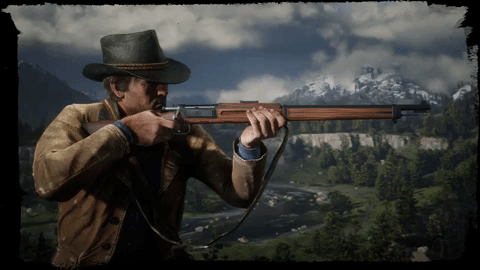

The world of Red Dead Redemption 2 spans five fictitious U.S. states. The states of New Hanover,
Ambarino and Lemoyne are new to the series, and are located to the immediate north and east of Red
Dead Redemption's world, whilst the states of New Austin and West Elizabeth return from Red Dead
Redemption. The states are centered on the San Luis and Lannahechee Rivers and the shores of Flat
Iron Lake. Ambarino is a mountain wilderness, with the largest settlement being the Wapiti Native
American reservation; New Hanover encompasses a sweeping valley and woody foothills that feature
the cattle town of Valentine, the riverside Van Horn Trading Post, and the coal town of Annesburg;
and Lemoyne is composed of bayous and plantations resembling the southeastern United States, and
is home to the Southern town of Rhodes, the village of Lagras, and the former French colony of Saint
Denis, analogous to New Orleans. West Elizabeth consists of wide plains,
dense forests, and the prosperous port town of Blackwater. This region has been expanded
from the original Red Dead Redemption with a vast northern portion containing
the mountain resort town of Strawberry. New Austin is an arid desert region on the border with Mexico and
centered on the frontier towns of Armadillo and Tumbleweed, also featured in the original game. Parts of
New Austin and West Elizabeth have been redesigned to reflect the earlier time; for example, Blackwater is
still under development, while Armadillo is a ghost town as a result of a cholera outbreak.
